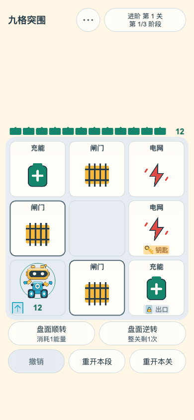
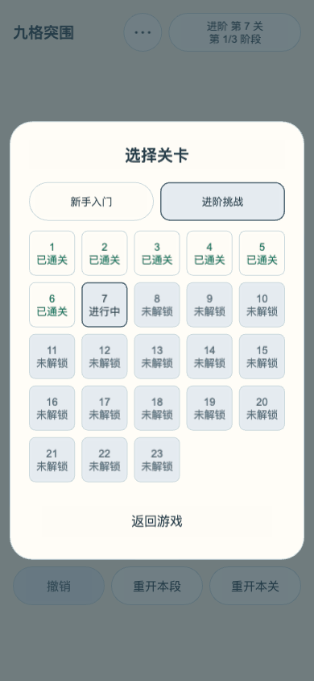
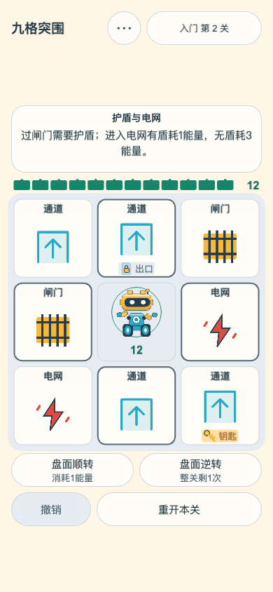
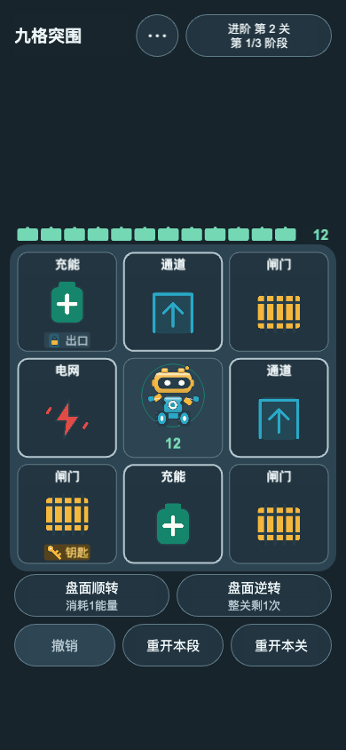
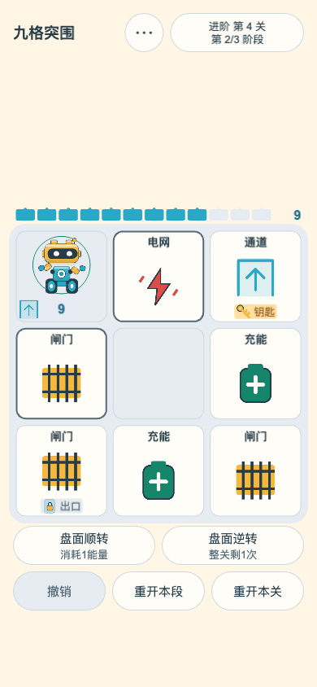

找到出路
轻点相邻格移动。每段都要先拿钥匙，再带着剩余能量抵达出口。
新手入门4关，每关1阶段；进阶挑战23关，每关3阶段。教学单独计算。
普通行动后，外圈设施顺时针转动。旋转时机器人、钥匙与出口保持原位。看清棋盘，再决定下一步。
轻点相邻格移动。每段都要先拿钥匙，再带着剩余能量抵达出口。
每关从12能量和一面盾开始。生效的充能格可以补充能量，并恢复护盾。
每关有一次不耗能量的逆转。当前阶段内随时撤销，重新推敲路线。
以下为 Web 版实际游戏画面。App Store 截图单独从 iOS 版准备。





新手入门4关，逐步认识机关；进阶挑战23关，完成三段连续突围。两条路径的第1关均可直接进入，各自逐关解锁。
每关在本机保留最新对局，切换关卡也能继续。无需账号，没有开发者云同步。
简中、繁中、英文自由切换。浅色、深色或跟随系统，声音可在「更多」调整。
新手教学通过3次引导操作学习移动、顺转和取钥匙，再由你自主抵达出口。可先学操作，也可直接选关；「更多」中随时可以复习教学。
iOS版仅在符合条件的进阶整关通关后尝试展示少量广告；教学、新手入门和进阶第1关不展示。核心玩法支持离线，广告不可用时仍可继续。
遇到问题、有新的建议，或某个关卡让你意外，欢迎联系我们。